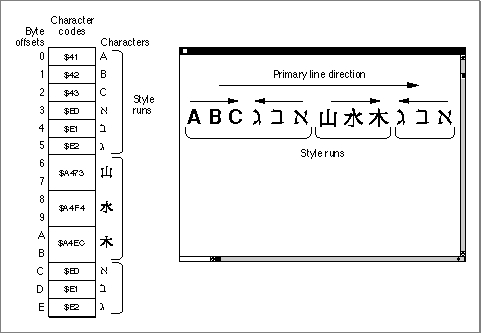

Legacy Document
Important: The information in this document is obsolete and should not be used for new development.
Important: The information in this document is obsolete and should not be used for new development.


QuickDraw Text, Script Systems, and Other Managers
Although QuickDraw provides the routines that are pivotal to drawing text on the Macintosh, it uses the services of other managers including the Font Manager and the Script Manager. To draw text consisting of multiple lines and mixed directions, you also need to use routines that belong to these managers, as well as some Text Utilities services. This section describes the relationship between QuickDraw and the Script Manager. It also provides an overview of the line-layout and text-drawing processes. For specific discussion of the routines that you use to perform the tasks inherent in these processes, see "Measuring and Drawing Lines of Text" on page 3-29.When you draw text using QuickDraw, the Script Manager interacts with QuickDraw to provide the script-specific support. To do this, the Script Manager needs to know which script you are using. It determines this from the font that you specify in the graphics port
txFontfield. For example, if the font is Geneva, the font script is Roman. The script specified by the current graphics port font is referred to as the font script.Although you can use most QuickDraw routines with all script systems, some QuickDraw routines entail restrictions. For example, you use one QuickDraw procedure to draw the glyph of a single character in a 1-byte script system, but you must use a different procedure to draw the glyph of a single character in a 2-byte script or a script system that contains zero-width characters. Some script systems contain fonts that have only 1-byte characters and some script systems contain fonts that have a mix of 1-byte and 2-byte characters. Some fonts have zero-width characters; these are usually overlapping diacritical marks which typically follow the base character in memory. With 2-byte characters, all but the first (high-order, low-address) byte are measured
as zero width.Most fonts, whatever script system they belong to, contain Roman characters, typically consisting of the 128 low-ASCII character set. The inclusion of Roman characters within another script system allows the user to enter Roman text without having to switch script systems. For script systems whose text has a left-to-right direction, such as Roman and Japanese, the direction of the text is uniform within a single style run. However, a single script system that portrays text read from right to left, such as Hebrew or Arabic, can also contain left-to-right text, such as numbers within the language of the script system or Roman-based text such as English. A single style run can also contain bidirectional text.
Some script systems that include the 128 low-ASCII character set include an associated font that is used to portray these characters. Use of an associated font is handled by the script management system without requiring any action on the part of your application. The way QuickDraw treats Roman space characters within a script system that supports bidirectional text differs from how it handles them otherwise. This behavior is explained later in this chapter in relation to eliminating trailing spaces from the end of a line.
For those script systems that support it, the existence of bidirectional text in a text range does not violate the concept of a single style run because QuickDraw uses the same text-related values in the graphics port record fields to draw all the glyphs of the entire segment of text; you do not need to change any of these values in order to draw the complete segment of bidirectional text as a single style run.
Figure 3-3 shows mixed Hebrew and Chinese text on a single line. There are three style runs. Only the first style run includes bidirectional text.
Figure 3-3 Multiple style runs on a single line
 For all script systems, you measure and draw text a single style run at a time, whether the text consists of a single character, a Pascal string, or a segment of characters. A text segment, as used in this chapter, means the portion of a style run that you may pass to a single QuickDraw call. It may be a complete style run or any portion of a style run, as long as it fits on a single line. If a style run extends across a line break, you must make separate calls for the separate segments of the style run.
Whether you draw the glyph of a single character or a line of text, it is up to you to track where the text begins, both in terms of vertical and horizontal screen position and offset into your text stream. With the help of either a Font Manager function (
OutlineMetrics) or a QuickDraw procedure (GetFontInfo), you can assess the line height based on the measurements of the script system font, and the associated font, if one exists, used to render the text, then determine the vertical screen position.In most cases, you also need to know the width of the display area where the text is to be drawn. For a line of text, you can think of this area as the display line. A display line is the horizontal length in pixels of the screen area where you draw a line of text; the left and right ends of the display line constitute its left and right margins. You define the display line length in pixels and uses this value to determine how much text will fit on the display line.
You specify where QuickDraw is to begin drawing by setting the current pen location of the graphics port. Within a single line of text, QuickDraw takes care of correctly advancing the pen position after it draws each glyph or text segment.
For text that exceeds a single display line, you must control where a line ends and the next one begins. For unidirectional text, this task essentially constitutes the line layout process. For mixed-directional text, the order in which you display the style runs may be different from their storage order. In this case, you also need to determine the drawing order in the line layout process.
To draw a line of text, you can loop through the text, laying it out first, then loop through the drawing process. A line-layout loop measures the text and determines where to break it. In most cases, you can use a Text Utilities function (
StyledLineBreak) for this purpose.To lay out justified text, a loop needs to include several additional steps that determine how to distribute the extra space among the text of the line. This process entails eliminating trailing spaces from the end of the line, then distributing the remaining extra space among the text. How the distribution of extra space is expressed throughout a line of text is dependent on the script system. For example, some script systems add additional width to space characters that are used as word delimiters; some script systems, which use connecting glyphs, stretch certain glyphs to encompass the additional width. See the next section, "Text Formatting and Justification," for more information.
Before you call a QuickDraw measuring routine, you need to set the graphics port text-related fields to those of the style run that the text is part of. You set these fields only for each new style run.
Once you have laid out a line of text, drawing it is fairly simple. An application can have a text-drawing loop that positions the pen at the beginning of a new line, sets the text-related fields of the current graphics port to the text characteristics for that style run if the text string begins a new style run, then draws the text, using one of the QuickDraw drawing routines to draw aligned text, justified text, or scaled text.